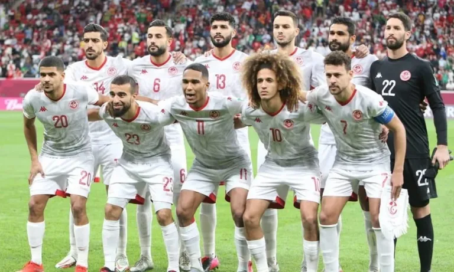

A Seleção da Tunisia já disputou cinco Copas do Mundo em sua história (1978, 1998, 2002, 2006 e 2018). Em 2022 Fará sua 6° participação que será no Qatar.
Copa das Nações Árabes, em 1963
Campeonato Africano das Nações, em 2004.
| Data/Hora | Estádio | Adversário |
|---|---|---|
| 22 nov 2022 / 10h00 | Estádio da Cidade da Educação | Dinamarca |
| 26 nov 2022 / 07h00 | Estádio Al Janoub | Austrália |
| 30 nov 2022 / 12h00 | Estádio da Cidade da Educação | França |